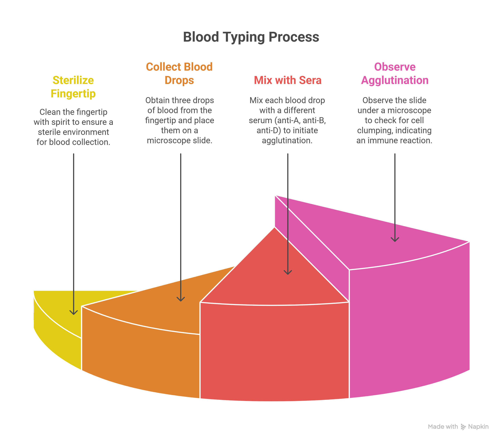

Experiment 6: Determination of Blood Group
AIM
To determine the blood group of my own blood sample.Requirements
- Lancet- Denatured spirit or ethanol solution
- Monoclonal antibodies (Anti-A, B, D kit)
- Glass slide
- Toothpicks
- Cotton swab
References
Practical handbook of Human Anatomy and Physiology by S.R. Kale. Nirali Prakashan, Eighth Edition, 2002. Page No. 33–34.Introduction
A person's blood group is determined by the presence or absence of certain antigens on the surface of their red blood cells. The blood group detection is termed as typing of blood. Blood of different people has been classified into different groups depending on the nature of agglutinogen present in them. There are more than 10 different blood grouping systems, but the ABO is accepted universally. There are four main blood groups in the ABO group system. Each group is important, and we need donors from every group to ensure we have the right blood for the people who need it. Which group you belong to depends on the antigens and antibodies in your blood. Antigens are a combination of sugars and proteins that coat the surface of a red blood cell.

Blood transfusion is essential in the following conditions:
- Haemorrhage either acute or chronic
- Shock to increase blood volume
- Blood diseases where the haemoglobin is below 40 percent such as aplastic anaemia, haemorrhagic conditions, haemophilia
- In carbon monoxide poisoning
The principle behind determining blood groups in a practical setting is based on agglutination, which is the clumping of red blood cells. This reaction occurs when specific antigens on the surface of red blood cells meet their corresponding antibodies.

About Antigens and Antibodies
- Antigens: Substances (usually proteins) on the surface of red blood cells. The most important ones for blood typing are the A and B antigens.
- Antibodies: Proteins in the blood plasma that recognize and bind to specific antigens. In the ABO system, there are anti-A and anti-B antibodies.
ABO Blood Group System
The ABO blood group system classifies blood into four main types based on the presence or absence of A and B antigens:
- Type A: Red blood cells have A antigens, and the plasma has anti-B antibodies
- Type B: Red blood cells have B antigens, and the plasma has anti-A antibodies
- Type AB: Red blood cells have both A and B antigens, and the plasma has neither anti-A nor anti-B antibodies
- Type O: Red blood cells have neither A nor B antigens, and the plasma has both anti-A and anti-B antibodies

Procedure using Slide Technique
- The fingertip of the subject is sterilized with spirit and a bold prick is made to have free flow of blood
- Three drops of blood are placed on a microscope slide
- A drop of anti-A agglutinin serum is mixed with one of the drops of blood, a drop of anti-B serum is mixed with the second drop, and a drop of anti-D serum is mixed with the third drop
- After allowing several minutes for the agglutination process to take place, the slide is observed under a microscope to determine whether or not the cells have clumped. If they have clumped, it indicates an immune reaction between the serum and cells
